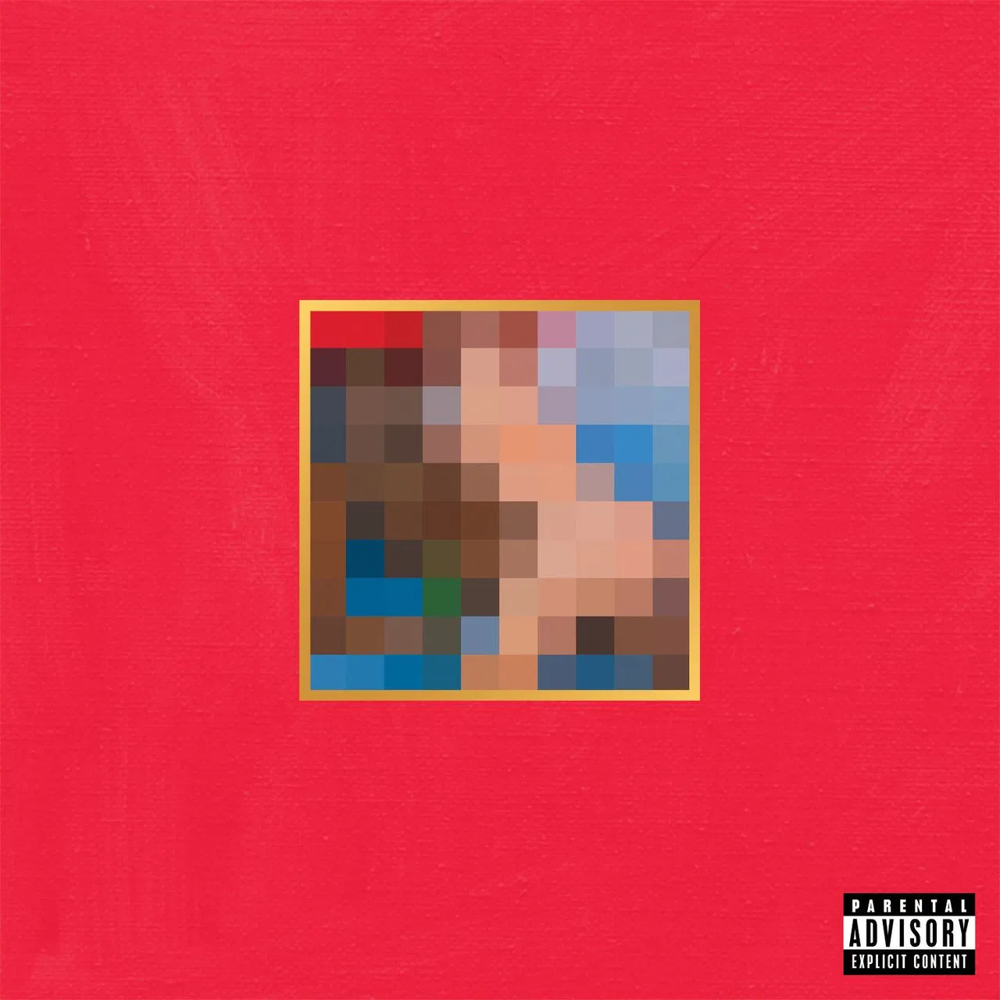

Outside of this being a class project this site exists for the sole
purpose of spreading knowledge about one of my favorite albums and what
has been called the greatest album of its decade
Album of the Decade

"Presiding over it all was the greatest producer of his generation,
pulling from 40-plus years of popular music to spin his symphony of
wounded pride, from the lush falsetto soul of “Devil in a New Dress”
to the heavy-metal thunder of “Hell of a Life."